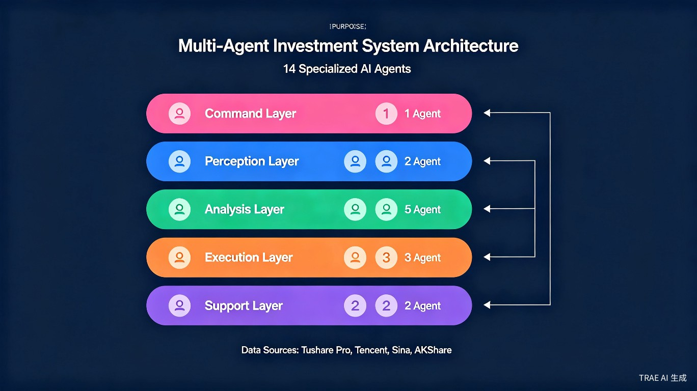
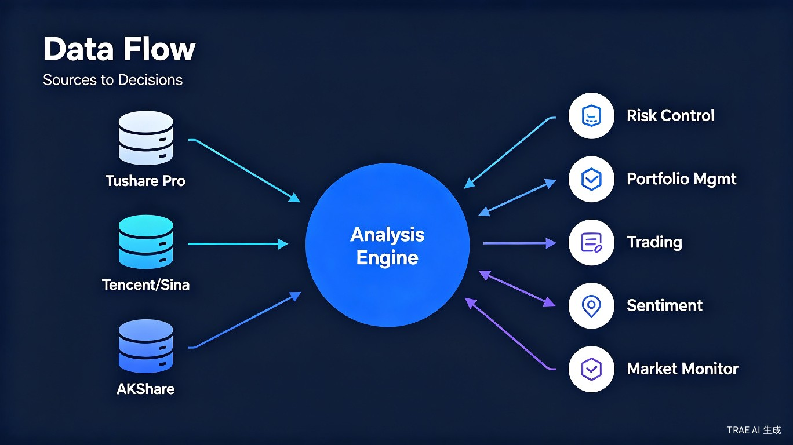
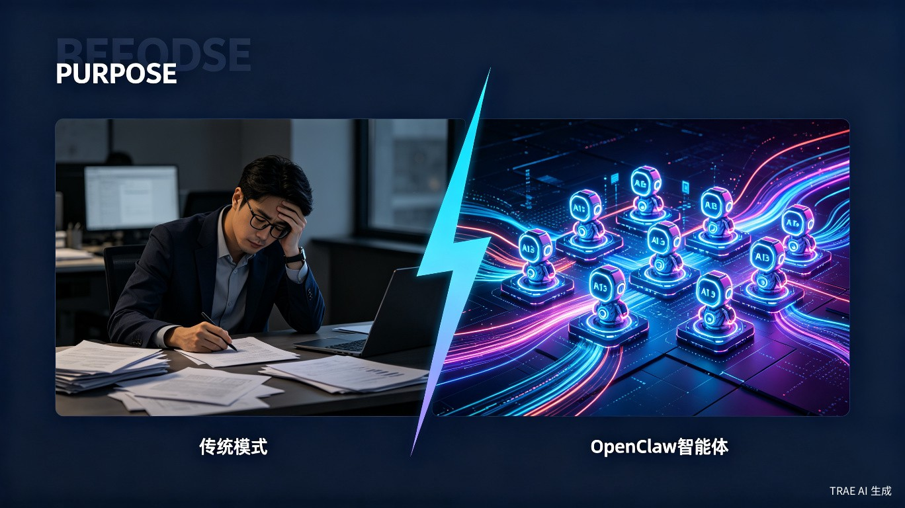
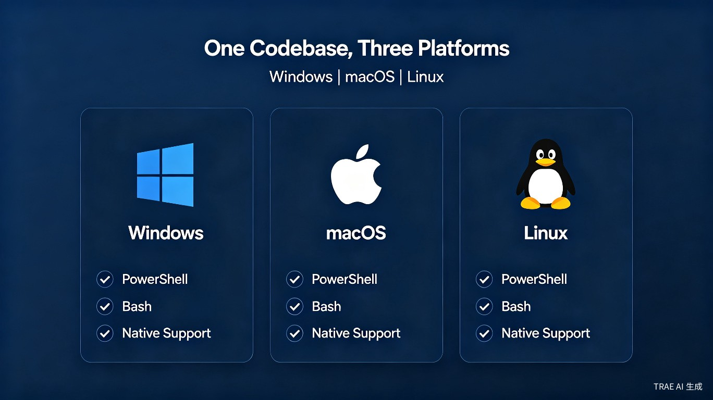

💡创意名称与介绍
创意名称：OpenClaw 智能体投资团队
我们想解决的问题是：普通投资者和中小型机构缺乏专业投研团队，面对海量市场数据无从下手，而传统量化系统开发周期长、成本高、维护难。我们希望用 AI 智能体技术，让每个人都能拥有一支 7×24 小时在线的专业投研团队。
灵感来源于真实投资场景：一位个人投资者需要同时关注宏观经济、行业轮动、资金流向、技术指标、风险控制等多个维度，但受限于时间和专业知识，往往顾此失彼。我们想到：如果能让多个 AI 智能体像真实投研团队一样分工协作，各自负责专业领域，再由投资总监统筹协调，是否能大幅降低专业投资分析的门槛？
产品形态：一套基于 OpenClaw 多智能体框架的投资分析与决策支持系统，支持 Windows / macOS / Linux 跨平台部署，通过 YAML 配置即可自定义策略和组合，无需编写代码。
🎯目标用户及痛点
核心用户群体
散户 / 高净值个人
缺乏专业投研支持，依赖碎片化信息做决策，容易被市场情绪左右。
私募基金 / 家族办公室
投研团队成本高，希望用 AI 辅助提升研究覆盖面和决策效率。
券商分析师 / 理财顾问
需要快速生成研究报告、跟踪多只股票、监控组合风险。
量化开发者 / 极客
希望快速搭建可扩展的投研系统，验证策略想法，降低开发成本。
使用场景
盘前准备（08:30）
投资总监智能体自动召开晨会，汇总宏观分析师、市场情绪分析师的 overnight 分析，生成今日作战指令。
盘中监控（09:30 - 15:00）
资金流向分析师、板块轮动分析师、趋势分析师实时监控市场异动，风险控制器自动触发预警。
盘后复盘（15:30）
经验归档员自动整理当日交易记录、生成复盘报告，价值筛选器扫描新的投资机会。
周末深度研究
量化策略师回测新策略，宏观分析师撰写周报，整个团队协同完成深度研究。
当前痛点
如果没有 OpenClaw 智能体投资团队，用户需要：
- 手动打开多个数据终端（Wind、同花顺、东方财富）获取数据，耗时且容易遗漏
- 雇佣 5-10 人的投研团队，年薪成本百万以上
- 开发传统量化系统需要 3-6 个月，投入大、迭代慢
- 策略调整需要修改代码、重新部署，业务响应滞后
- 跨平台部署困难，Windows 和 Linux 环境难以统一
🚀价值与意义
效率提升
相较于传统开发方式，OpenClaw 智能体投资团队将投研系统搭建时间从 3-6 个月缩短到 1 小时以内。通过 YAML 配置文件即可定义新的智能体角色、调整工作流、添加数据源，无需修改任何代码。业务人员可以直接参与系统配置，实现"业务即配置，配置即系统"的颠覆性变化。
商业价值
对于中小型投资机构，OpenClaw 提供了一种"轻量级投研中台"的解决方案。传统方式组建一个覆盖宏观、行业、量化、风控的投研团队，年成本在 150-300 万元。而 OpenClaw 智能体团队基于开源框架 + API 调用，年运行成本可控制在 5 万元以内，成本降低 95% 以上，同时覆盖能力不逊色于传统团队。
社会价值（社会公益）
我们选择了社会公益附加标签，因为：
- 降低投资门槛：让普通投资者也能获得专业级投研支持，减少信息不对称带来的投资损失
- 投资者教育：智能体的分析过程完全透明可追溯，用户可以看到每一步推理逻辑，提升金融素养
- 开源共享：整个框架基于 OpenClaw 开源生态，策略模板和工作流可以社区共享，促进金融普惠
🏗️系统架构
OpenClaw 智能体投资团队采用五层架构设计，从数据感知到执行决策形成完整闭环：

14 大智能体分工
投资总监
统筹全局，制定投资策略，协调各分析师工作，输出最终决策。
组合经理
管理多个投资组合，执行再平衡，跟踪绩效归因。
宏观分析师
跟踪宏观经济指标、货币政策、国际形势，输出宏观研判。
板块轮动分析师
监控行业景气度，识别板块轮动机会，输出行业配置建议。
资金流向分析师
追踪主力资金、北向资金、融资融券数据，识别资金异动。
趋势分析师
技术面分析，识别趋势、支撑阻力、形态突破信号。
价值筛选器
基于财务指标进行价值筛选，发现低估值优质标的。
市场情绪分析师
监测市场情绪指标、舆情热度，判断恐惧/贪婪指数。
风险控制器
实时监控组合风险，触发止损、仓位控制、集中度预警。
交易分析师
执行交易指令，记录交易日志，分析交易成本与滑点。
量化策略师
开发、回测、优化量化策略，输出策略绩效报告。
市场热度分析师
监控市场成交量、换手率、涨停家数等热度指标。
经验归档员
自动归档每日分析、交易记录，构建团队知识库。
系统管理员
监控系统健康、管理 API 配额、处理异常告警。
🌊数据流转
系统采用三层数据源架构，确保数据的完整性和可靠性：

数据从 Tushare Pro（专业金融数据）、腾讯/新浪（实时行情）、AKShare（开源补充）三大来源汇聚，经过清洗、缓存、分发，最终到达各智能体进行分析和决策。整个流程支持自动降级和故障转移，确保数据不中断。
⚖️前后对比
传统开发方式 vs OpenClaw 智能体方式：

| 维度 | 传统开发方式 | OpenClaw 智能体 |
|---|---|---|
| 团队组建 | 招聘 5-10 人，耗时 2-3 个月 | YAML 配置 14 个智能体，5 分钟 |
| 系统开发 | 3-6 个月编码开发 | 基于 OpenClaw 框架，1 小时部署 |
| 策略调整 | 修改代码 → 测试 → 部署，1-2 周 | 修改 YAML 配置，即时生效 |
| 跨平台支持 | 需单独适配 Windows/Linux/macOS | PowerShell + Bash 双脚本，开箱即用 |
| 扩展新智能体 | 需编写新模块，集成到系统 | 复制模板 + 修改提示词，30 分钟 |
| 年运营成本 | 150-300 万元（人力 + 系统） | ~5 万元（API 调用费用） |
| 工作时长 | 工作日 8 小时 | 7×24 小时不间断 |
| 分析覆盖 | 受人力限制，通常覆盖 20-50 只标的 | 可覆盖全市场 5000+ 只标的 |
💻跨平台能力
OpenClaw 智能体投资团队原生支持 Windows、macOS、Linux 三大操作系统：

所有核心脚本均提供 PowerShell（.ps1）和 Bash（.sh）双版本，配置文件采用 YAML 格式，确保在任何平台上都能一致运行。Docker 容器化部署也在规划中，进一步简化运维。
✨技术亮点
🧠 六维提示词系统
每个智能体配备 IDENTITY、SOUL、AGENTS、TOOLS、HEARTBEAT、USER 六维提示词，确保角色定位精准、行为一致。
🔄 工作流引擎
基于 YAML 的声明式工作流，支持定时任务（Cron）、事件驱动、手动触发三种模式，灵活编排智能体协作。
📊 组合隔离
每个投资组合独立分析、独立决策、独立风控，避免策略之间的相互干扰。
🔔 多渠道通知
支持钉钉、企业微信、邮件、Webhook 等多种通知渠道，确保关键信息及时触达。
📝 完整可追溯
每次分析、每个决策、每笔交易都有完整的日志记录和事件流，支持事后审计和复盘。
🌐 开源生态
基于 OpenClaw 开源框架，社区共享策略模板、工作流配置，持续迭代进化。
🔮未来规划
Phase 1：核心能力完善（当前）
14 个智能体全部就绪，支持 A 股全市场分析，基础工作流运行稳定。
Phase 2：多市场扩展
扩展至港股、美股、加密货币市场，增加多语言支持。
Phase 3：智能进化
引入强化学习，让智能体从历史交易中自主学习优化策略。
Phase 4：社区生态
开放策略市场，用户可以分享和购买策略模板，形成投研智能体生态。
🎉结语
OpenClaw 智能体投资团队不仅是一个技术项目，更是我们对"AI 普惠金融"理念的实践。我们相信，通过多智能体协作和开源共享，可以让更多人获得专业级的投资分析能力，降低信息不对称，提升投资决策质量。
感谢 TRAE AI 大赛提供这个展示平台，我们期待与更多开发者交流，共同推动 AI 在投资领域的应用落地。
— OpenClaw 智能体投资团队